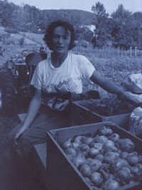
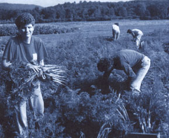
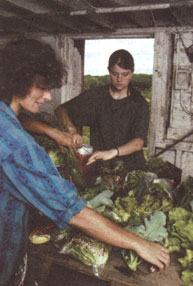

It all started in 1985 on a small but fertile piece of bottomland tucked at the foot of the Berkshires in southwestern Massachusetts. Robyn Van En, organic market gardener and owner of Indian Line Farm, and Jan VanderTuin began to grow apples and winter-storage crops for a group of 30 families and friends. But instead of taking the financial risk of growing the crops and selling them to the group, the two sold shares of the harvest before the season started. The idea wasn't exactly new-VanderTuin had worked with a similar group in Switzerland, and there were others in Japan. It was, however, the first of its kind in the United States. They called their system Community Supported Agriculture (CSA).
Today the Indian Line Farm CSA serves more than 300 people and has become the model for nearly 50 CSAs across the country. Van En, likewise, has become the leading voice for what she sees as a saner, more sustainable form of food production that supports local growers. Her CSA workbook and VanderTuin's video, "It's Not Just About Vegetables, " have laid the ground work for many of the groups. Inquiries from every state in the union have poured in to Van En's 200-year-old farmhouse.
CSAs foster the symbiotic relationship between farmers and consumers. For farmers, they provide a guaranteed market for the crop while relieving them of much of the financial risk. For the shareholders, they provide fresh, organically grown vegetables at supermarket prices, plus a fundamental connection to a local farm.
Last fall, Mother's Joel Bourne decided to pay Robyn Van En a visit to find out what the last five years have brought her, and what the next few years may bring.
Mother: It's been five years since you started the Indian Line Farm CSA; since then, the concept has blossomed all over the country. But just for the record, why do you think we need Community Supported Agriculture?
Van En: The Northeast is dependent on California and the Southwest for 92% of its produce, and that is insane. California can't go on forever. They're losing their water. They've salinized the land to incredible proportions. California can still give us oranges and avocados and lemons, but there is no reason why we need to get everything else from there, too. Right now, by doing just the most basic gardening and using a root cellar for storage of root crops, we can provide vegetables for 43 weeks of the year.
CSA creates a direct connection between the people who will be eating the food and the people who are growing it. We've been so separated from our food in the past. When you buy a quart of milk, there is something like 86 cents between what the farmer gets and what you pay. And those middlemen aren't farming.
In New Zealand the farmers are really cherished. In China they are the most honored citizens. They feed the people. It's really logical. And the farmers in this country-well, it's just the saddest thing. I see Community Supported Agriculture as a way to empower people on an individual basis, then on a community basis, and eventually, on a regional, national, even global basis.
Mother: Where did the idea for CSA originate?
Van En: The philosophy has been at work in Japan and Western Europe since about 1965. The first groups were established by mothers, the main caregivers at home. In Japan they saw the increase in food imports and the loss of arable land. It was logical that it should happen in Western Europe, too, where the farmers are geared toward cooperative work. In Switzerland, for example, three or more farms may share the same equipment. One person will be the first to get his hay in one year, and the next year he'll go to the bottom of the list. When you are diversifying all the capitalization, the maintenance of the equipment, and the work, it's to everyone's advantage to help each other.
With CSA, it's sort of the same thing. This way, everything goes to the sharers. They own the harvest. They've advanced you money and gone through any risk with you, and so they realize any bounty with you. For this to work, you've got to be very committed to your community and your community has to be the same to you.
"The only way we survived in the first place was as tribes. The only way we'll survive in the future is as united communities."
Mother: Tell me about your first year.
Van En: In the fall of `85, I was in a staples-buying club and the group said, "We'll buy anything that you can grow, Robyn." Right there I had eliminated a marketing hassle, but I still had all the capitalization, all the risk, and all the work to contend with. I grew mostly winter-storage crops: garlic, onions, potatoes, and carrots.
Then Jan came along. He had been in Switzerland and was involved with the startup of one of the CSA groups outside of Zurich. We talked for about five minutes, and I said, "That's exactly what we need here."
Mother:Did you ever have any doubts during that first year about the success of the CSA?
Van En:I don't think I ever felt that it couldn't happen, because it's just so logical. In the first year, you go with your immediate friends and the people you're most in contact with. The third year is a little more telling. That's the rule of thumb in any business, because you exhaust your immediate supply of friends and then their supply of friends.
Mother:So you started out with 30 families?
Van En:Yes. They were getting a bag of vegetables twice a week and that turned out to be too often for most people; each bag weighted an average of five to seven pounds. So the next year, we made it just once a week, and larger families could still get a bag twice a week if they wanted.
Mother: Let's talk about the risk. What happens if you lose a crop to flood or drought?
Van En: Even in a drought, there are certain things that you can mulch, certain things that will tolerate the drought, and certain things that, if you've got a limited water supply, you can give that bit of water to. If you had three acres of lettuce out there, you'd be out of luck. There's no way you could take care of it in a drought like we had in 1989.
It would take just short of a major flood to wipe out everything we grow. One year we had a rainstorm that dropped eight inches of rain over South Egremont in three hours. It totally flooded out our winter squash patch. But that turned out to be about $30 of the $600 share price, when it would have been a $3,000 loss to a typical farmer, which would scuttle a lot of farms. A farmer near here lost $95,000 worth of potatoes in the floods last spring, and almost that much in squash.
Mother: But how much actual risk is there for the shareholder?
Van En: It depends on how many shares make up the group. With 85 shareholders, each person risks one-eighty-fifth of the budget; this year, that's $340. It's stated right in the prospectus; they are in the risk and sharing in the bounty. If they don't feel they get enough, they won't sign up again the next year. But it depends on how you look at the risk, too. When you eat produce from most grocery stores, you're taking a risk from all the chemicals used to grow it. One thing we are trying to do is educate shareholders about what farmers are up against.
Mother: Are there people who support the group out of sheer altruism?
Van En: There are definitely people who really believe in it. A local artist told us he would donate paintings to raise funds, and one of our shareholders, who is in the fabric business, donated muslin for bags.
Mother: What are your shareholders like? Are they urban or rural?
Van En: We've got all kinds. We have some people who are just curious about vegetables. They don't care about any of the politics, and they might not even realize the social statement they're making by supporting a local community farm that uses alternative methods of agriculture. They may not realize the impact it will have. We're supplying 35 families from the Boston area, and I've got a list this long of people in New York City who want shares. Even if these people only saw the farm once a year they still would have a connection. It's still a more regional agricultural system than one that comes 3,000 miles across the country day after day.
Mother: Can you really produce fresh, organically grown vegetables at supermarket prices?
Van En: So far it has been cost competitive. The supermarket food is coming from California and the Southwest. I don't know how they've been getting it here so darn cheaply. But with all the petrochemicals they use to grow their produce and the petroleum it takes to get it across the country, that price is really going to change.
My intention with the groups is to design something that can be duplicated anyplace in the world. And on any financial scale. I think this model should be in Nicaragua, in Bangladesh. I've done this whole farm with virtually no money at all.
Mother: How viable are CSAs for people with a small plot of land who want an extra or even a main source of income?
Van En: It's not like anybody's going to get rich on it-unless there's really a shift, which I think could happen. But just determining your budget and selling your shares to meet that budget makes it a viable situation. If you don't sell all your shares, you cut your budget. That's happened to us before. I'll tell you though, the one response I've heard over and over has been, "This is so logical. Why haven't we always been doing this?"
Mother: Are there limitations of scale?
Van En: The smallest project I know is in eastern Pennsylvania where a fellow is doing 12 shares on a quarter of an acre with a Rototiller. The biggest one I know of, in Japan, feeds 1,000 families and supports 14 farmers. They're getting all their fruits, vegetables, miso, tofu, and fish from this committed consumer group's connection to this committed production group.
There are other ways to do it, too. I was just talking to a group in Williamstown, and this guy came up and said, "God, this is the best thing I've ever heard. But my wife and I have 60 acres of rocks." I said, "Well, do you have any maple trees? Do you have anything that you can be farming that you can connect with this group?" He says, "You know, we do have maple trees." And I said, "There! Put in some bee boxes."
When you get one of these projects going, you have this captive audience that you're working with and educating in the process. We're going to be networking with a guy here who makes maple syrup. There's another guy in Sheffield, right over the hill, who raises totally organic beef. He grows all the feed for them-wonderful stuff. These people have access to our sharers to educate them with their information, and the sharers are free to get in touch with them.
Mother: How far can you take it?
Van En: Somebody asked, "Well, what about the community supported auto mechanic?" What if everybody signs up for an oil change and a lube and pays their $30, signs up for when they're going to be in, and then the mechanic can go out and buy the lift he wants or put the down payment on it?
Mother: So CSAs are more than just a means of putting fresh, organically grown local vegetables on the table. You're rebuilding communities here.
Van En: The basic intention is to raise the social status of farmers in a community. The only way we survived in the first place was as tribes-small communities, if you will. The only way we're going to survive in the future is as united communities. If they shut off all the power tomorrow, where are you? You've just got your immediate community to work with. If there is no more gas
Mother:You've got your neighbor.
Van En: You've got your neighbor. And you'd better know who your neighbor is and what you can do for each other.
Mother: Where do you see CSAs in the future?
Van En: Ten years from now I think they're going to be everywhere-I mean, really everywhere. Every prison should have a CSA feeding the prison and the community around it. Every housing development should have a CSA.
Communities should have lots of farms around them. This is the only earth we've got. And it's owned by a handful of people. It's only going to get more and more precious. Arable land is a much better thing to leave our grandchildren than a bunch of time-share condos.
|
 CLEMENS KALISCHER Robyn Van En surveys the bounty of her CSA's labor. Her dog, Bubbles, seems less interested. |
 CLEMENS KALISCHER CSA members harvest carrots as part of their duties. |
 CLEMENS KALISCHER Shareholders receive organic produce, as much as seven pounds each week, for supermarket prices. |